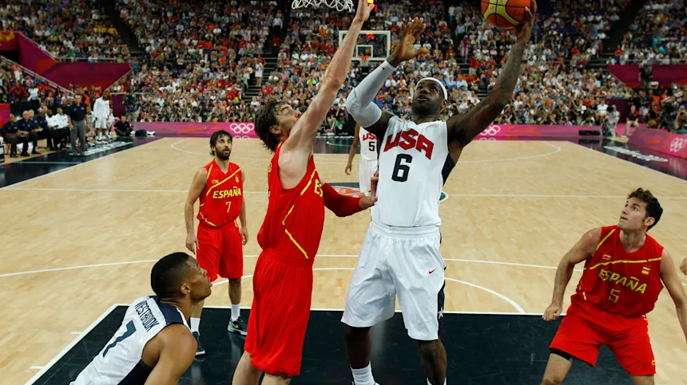
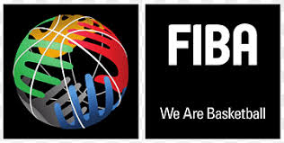

Basketball is a team sport in which two teams, most commonly of five players each, opposing one another on a rectangular court, compete with the primary objective of shooting a basketball (approximately 9.4 inches (24 cm) in diameter) through the defender's hoop (a basket 18 inches (46 cm) in diameter mounted 10 feet (3.048 m) high to a backboard at each end of the court), while preventing the opposing team from shooting through their own hoop. A field goal is worth two points, unless made from behind the three-point line, when it is worth three. After a foul, timed play stops and the player fouled or designated to shoot a technical foul is given one, two or three one-point free throws. The team with the most points at the end of the game wins, but if regulation play expires with the score tied, an additional period of play (overtime) is mandated.
.Basketball was originally played with a soccer ball. These round balls from "association football" were made, at the time, with a set of laces to close off the hole needed for inserting the inflatable bladder after the other sewn-together segments of the ball's cover had been flipped outside-in.[7][8] These laces could cause bounce passes and dribbling to be unpredictable.Eventually a lace-free ball construction method was invented, and this change to the game was endorsed by Naismith (whereas in American football, the lace construction proved to be advantageous for gripping and remains to this day). The first balls made specifically for basketball were brown, and it was only in the late 1950s that Tony Hinkle, searching for a ball that would be more visible to players and spectators alike, introduced the orange ball that is now in common use. Dribbling was not part of the original game except for the "bounce pass" to teammates. Passing the ball was the primary means of ball movement. Dribbling was eventually introduced but limited by the asymmetric shape of early balls.[dubious – discuss] Dribbling was common by 1896, with a rule against the double dribble by 1898.
Basketball's early adherents were dispatched to YMCAs throughout the United States, and it quickly spread through the United States and Canada. By 1895, it was well established at several women's high schools. While YMCA was responsible for initially developing and spreading the game, within a decade it discouraged the new sport, as rough play and rowdy crowds began to detract from YMCA's primary mission. However, other amateur sports clubs, colleges, and professional clubs quickly filled the void. In the years before World War I, the Amateur Athletic Union and the Intercollegiate Athletic Association of the United States (forerunner of the NCAA) vied for control over the rules for the game. The first pro league, the National Basketball League, was formed in 1898 to protect players from exploitation and to promote a less rough game. This league only lasted five years.
FIBA (International Basketball Federation) was formed in 1932 by eight founding nations: Argentina, Czechoslovakia, Greece, Italy, Latvia, Portugal, Romania and Switzerland. At this time, the organization only oversaw amateur players. Its acronym, derived from the French Fédération Internationale de Basket-ball Amateur, was thus "FIBA". Men's basketball was first included at the Berlin 1936 Summer Olympics, although a demonstration tournament was held in 1904. The United States defeated Canada in the first final, played outdoors. This competition has usually been dominated by the United States, whose team has won all but three titles. The first of these came in a controversial final game in Munich in 1972 against the Soviet Union, in which the ending of the game was replayed three times until the Soviet Union finally came out on top.[28] In 1950 the first FIBA World Championship for men, now known as the FIBA Basketball World Cup, was held in Argentina. Three years later, the first FIBA World Championship for women, now known as the FIBA Women's Basketball World Cup, was held in Chile. Women's basketball was added to the Olympics in 1976, which were held in Montreal, Quebec, Canada with teams such as the Soviet Union, Brazil and Australia rivaling the American squads.
The FIFA Council has confirmed that the FIFA U-17 World Cup™ will be expanded to 48 teams and be held annually rather than biennially, as part of the governing body’s steadfast commitment to youth football.
Games are played in four quarters of 10 (FIBA)or 12 minutes (NBA).College men's games use two 20-minute halves,college women's games use 10-minute quarters,[42] and most United States high school varsity games use 8-minute quarters; however, this varies from state to state.15 minutes are allowed for a half-time break under FIBA, NBA, and NCAA rules[41][45][46] and 10 minutes in United States high schools.Overtime periods are five minutes in length[41][47][48] except for high school, which is four minutes in length.[43] Teams exchange baskets for the second half. The time allowed is actual playing time; the clock is stopped while the play is not active. Therefore, games generally take much longer to complete than the allotted game time, typically about two hours. Five players from each team may be on the court at one time.Substitutions are unlimited but can only be done when play is stopped. Teams also have a coach, who oversees the development and strategies of the team, and other team personnel such as assistant coaches, managers, statisticians, doctors and trainers.
The game is controlled by the officials consisting of the referee (referred to as crew chief in the NBA), one or two umpires (referred to as referees in the NBA) and the table officials. For college, the NBA, and many high schools, there are a total of three referees on the court. The table officials are responsible for keeping track of each team's scoring, timekeeping, individual and team fouls, player substitutions, team possession arrow, and the shot clock.